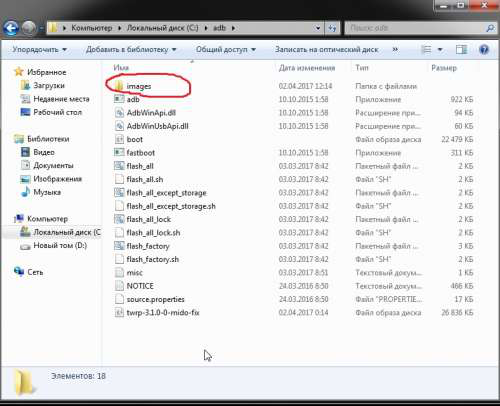
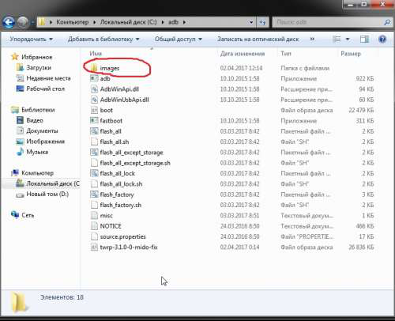
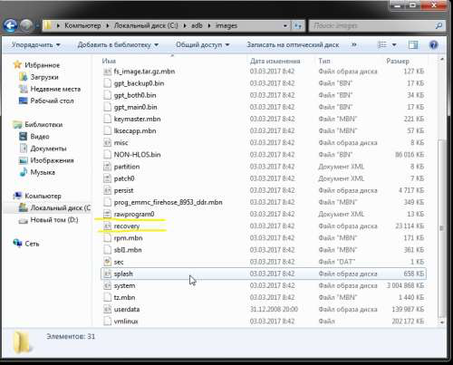

Уменьшено на 37%
Уменьшено на 37%

788 x 640 (131,2 КБ)
Удаление SU и возврат к ОТА
http://4pda.ru/forum/index.php?showtopic=804582&st=1260#entry60081858
Для тех кто хочет вернуть ОТА после прошивки кастомного рековери SU
Мой пример, прошил девелопер (можно и стабильную) но чтобы не терять данные прошил кастомный рековери, далее прошил SuperSU, восстановил данные приложений с помощью Titanium backup.
1. Далее из под рековери удаляем SU прошить данный архив uninstallSU.zip ( 4,74 КБ )
если не накатывали скрипт защиты то шьем его перед загрузкой в систему lazyflasher-no-verity-opt-encrypt.zip ( 420,95 КБ )
2. Далее, в зависимости какая у вас прошивка ищем стоковый рековери в папке с прошивкой (у меня архив для fastboot в папке images и из под этой папки)
|
 788 x 640 (131,2 КБ) |
|
 798 x 644 (152,83 КБ) |
комбинация кнопок Shift+правая кнопка мышки - открыть окно команд и прописываем
fastboot flash recovery recovery.img
жмем Enter прошивается на стоковый рековери, проверяем его, грузимся в систему, после этого можно смело прошивать ОТА автоматом не боясь получить бутлуп.